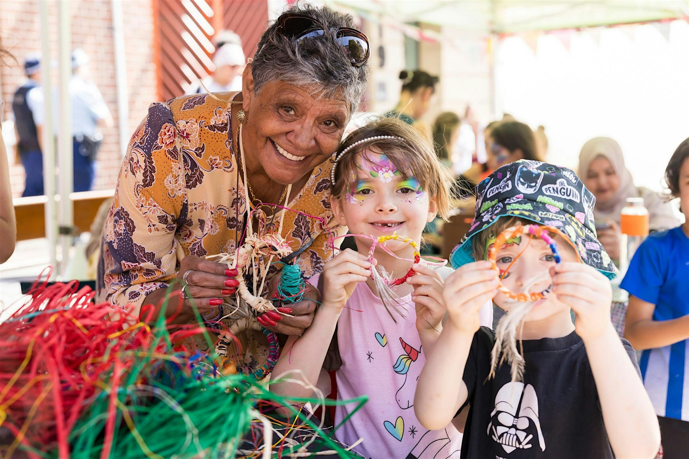

Lost & Found
No approved information at present.
AREA: ULTIMOSmall help, close to home.
Ultimo and nearby neighbourhoods · Free local prototype
Skip to community information
No approved information at present.
AREA: ULTIMONo approved information at present.
AREA: ULTIMONo approved information at present.
AREA: ULTIMONo approved information at present.
AREA: ULTIMONo approved information at present.
AREA: ULTIMONo approved information at present.
AREA: ULTIMOPlease do not include private information.